(1) Write a function which takes as input a square matrix and its size and returns its trace.
(2) Find all solutions to the system 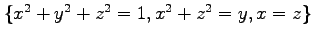.
(3) How many real roots does the equation 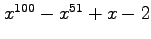 have? (Could you have predicted this before-hand?).
(4) Find out how to factor polynomials in Maple and then factor 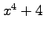. Compare this with the following command: evala(AFactor());
(5) Suppose that we have Maple variables 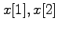, and 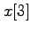; we shall consider polynomials 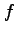 in these three variables. Write a function that takes as input a polynomial and a permutation 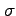 (expressed in word form as an array such as [1,3,2]) and returns the polynomial produced from by permuting the variables according to . For example, if 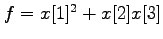 and 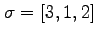, then we would like to return
(6) a) Let 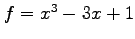. Look up the Maple commands to find the Galois group of . b) Let be a root of in the interval 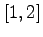. Given that there are polynomials 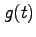 and 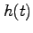 with rational coefficients such that 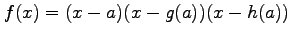, find the polynomials and 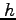.
(7) If you are familiar with Gröbner bases, look up how Maple handles these computations. Work out explicitly some Gröbner bases for the polynomials 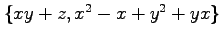 using different term orders. Compare the performance of other examples with that of Singular and Macaulay 2.